Pencil and pen, drawn from observation. The thing I keep doing when nothing is asking me to.
Before any of the design work, there was me sitting with something long enough to actually see it — a face, a plant, a machine. These are graphite, ballpoint, and pen studies kept over the years: people drawn from life, plants, places, and the mechanical things I felt an urge to take apart with a pencil.
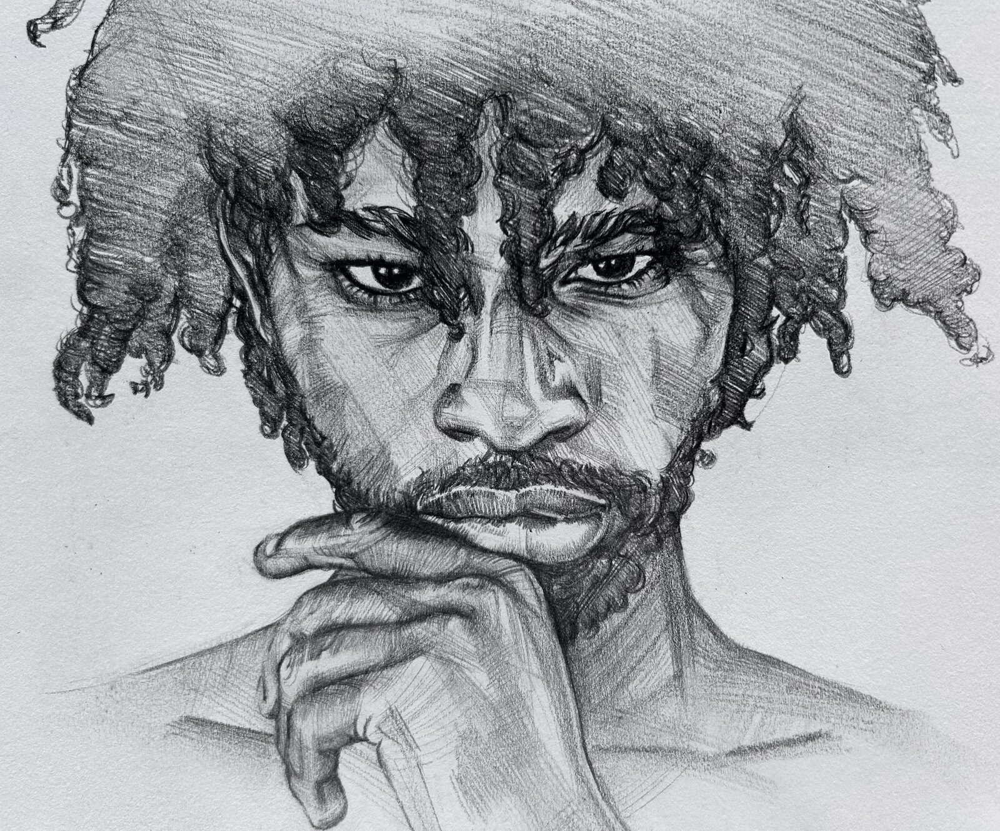
Most of these start the same way — an appreciation for some structure I can’t quite leave alone, and the urge to participate in it with a pencil. They end up an exercise in patience: rendering form and value slowly enough that a surface, whether skin, bark, or metal, starts to read as itself.
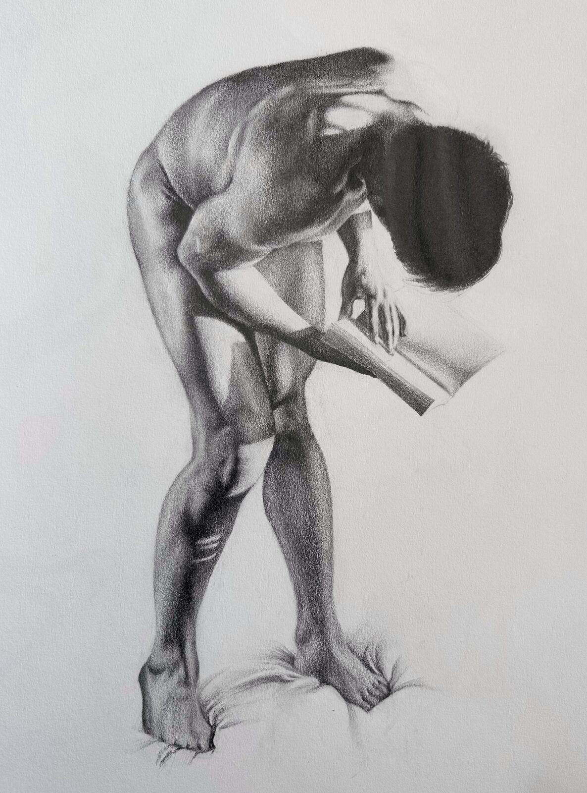
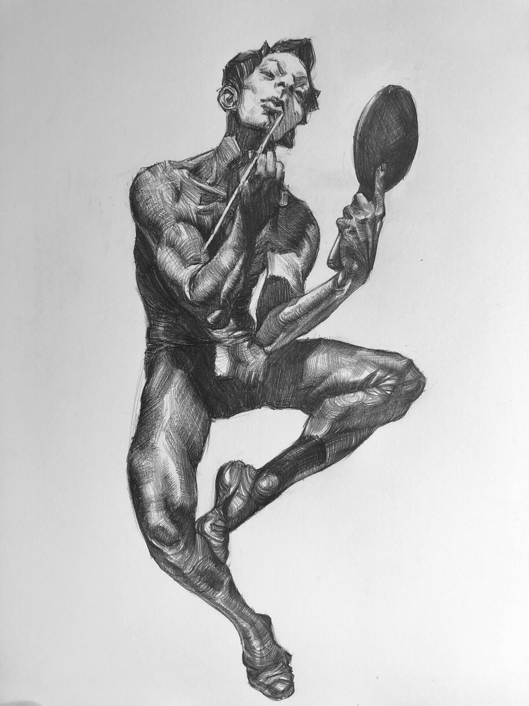
Figure studies — the body is the hardest still life there is. Graphite and ballpoint.
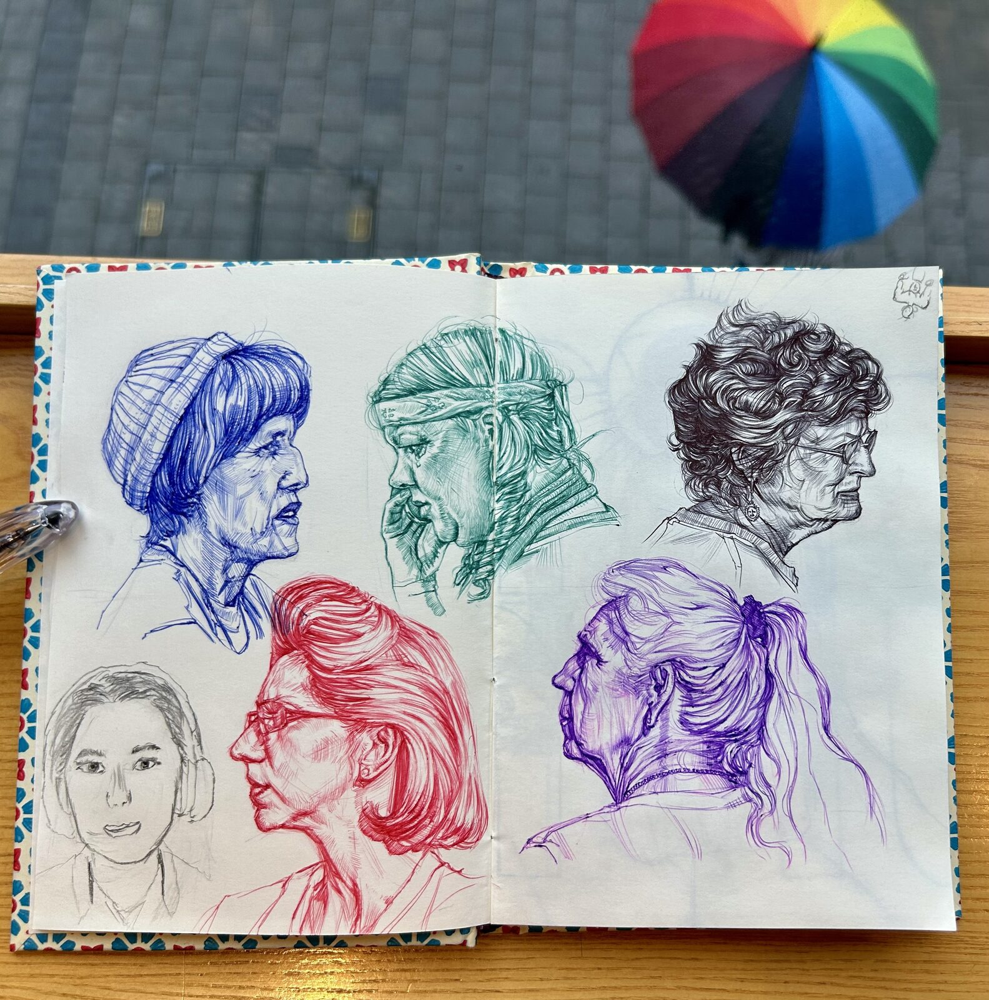
Strangers, drawn from life in whatever pen was in my bag — a different colour for each face, in the few minutes before they moved.
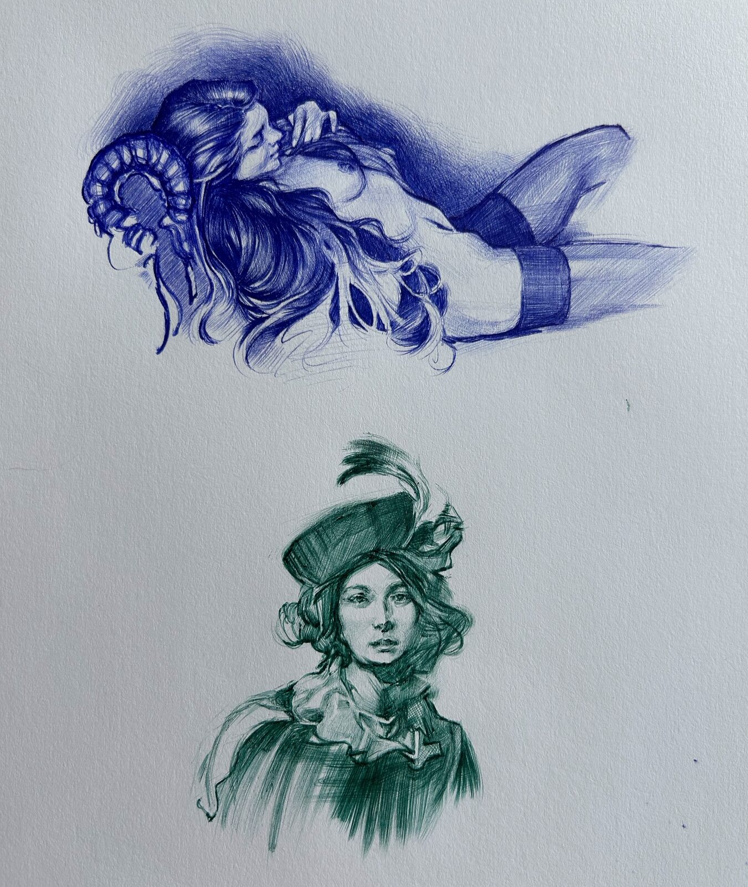
Studies in whatever colour the pen happened to be — blue and green ballpoint.
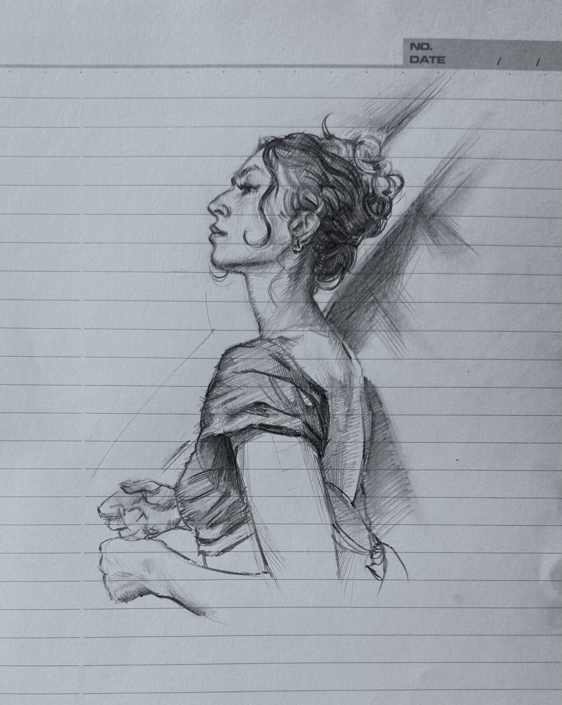
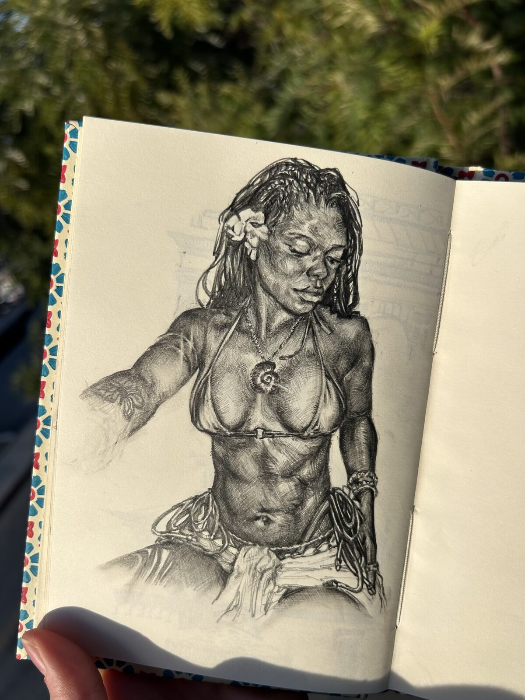
More heads, caught quickly — on lined paper, or in ballpoint before the pose broke.
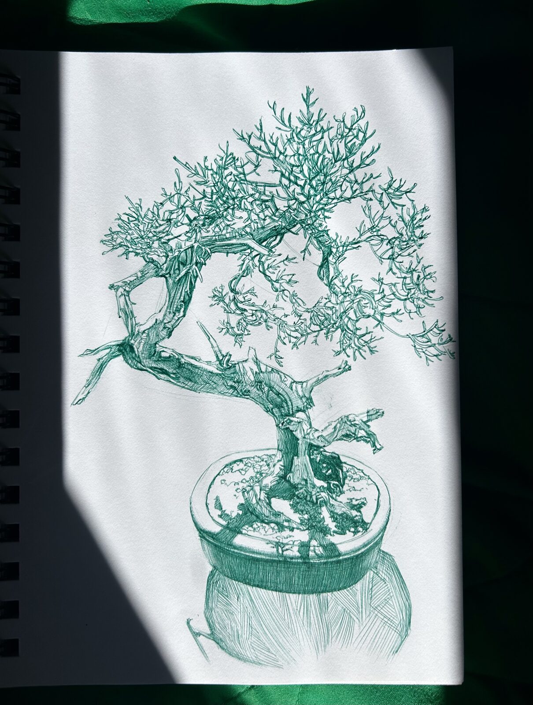
A bonsai in green ballpoint — the same patience as the figures, turned on something that has been shaped for a hundred years.
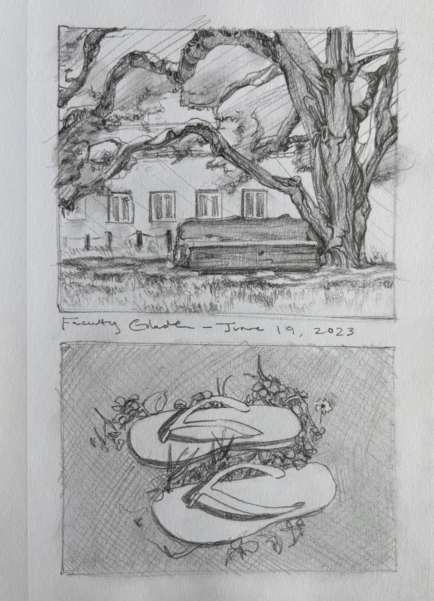
Faculty Glade, drawn on site — June 19, 2023. Plein air is the only drawing with a deadline: the light moves, so you commit.
The other half of the page is mechanical. I like drawing machines for the same reason I like reading their drawings: nothing is decorative, every line is doing a job.
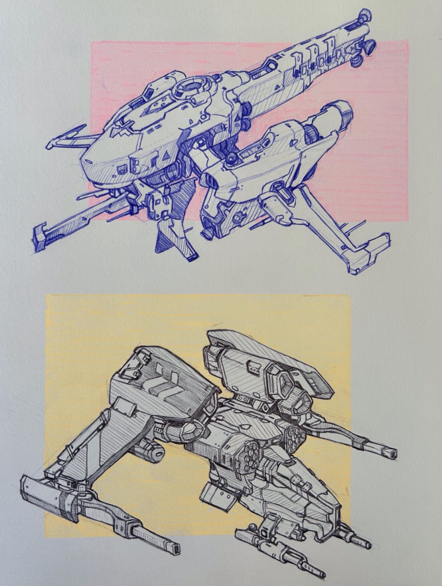
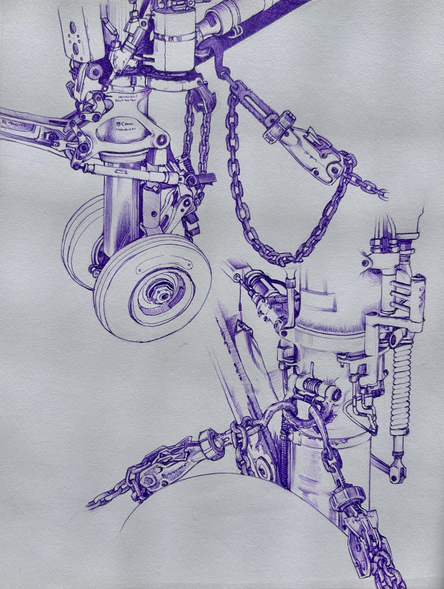
Mechanical and concept studies, ballpoint.
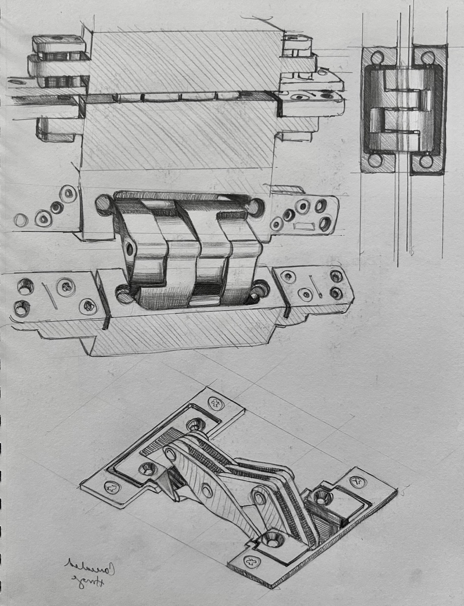
And sometimes it’s just a hinge — drawn from several angles until I understand exactly how it folds.